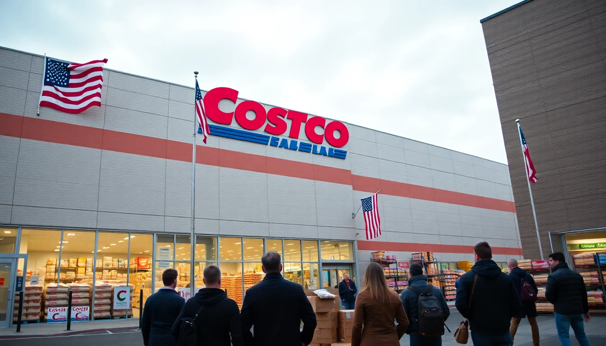

Costco launches "Operation Bulk Buy": Massive invasion of European grocery market sparks unprecedented retail alliance
FRANKFURT, Germany (CNN) — In a stunning escalation of what analysts are calling "The Great Grocery Wars," American retail giant Costco has launched a massive invasion of the European market, prompting fierce rivals Carrefour and Aldi to form an unprecedented defensive alliance against the American retail behemoth.
The invasion, dubbed "Operation Bulk Buy" by Costco executives, began at dawn Tuesday as the membership-only warehouse chain simultaneously opened 47 massive stores across Germany and France, with plans for 200 more by year's end. The move comes just days after the public feud between Aldi Nord and Aldi Sud captured international attention.

"We are bringing the American shopping experience to Europe," declared Costco CEO Ronald Vachris at a press conference in Frankfurt. "Europeans deserve 5-liter jars of mayonnaise and 48-count toilet paper packs just like Americans do."
The invasion has forced historic enemies to unite. Carrefour CEO Alexandre Bompard and Aldi executives stood side-by-side Wednesday to announce "Operation Continental Defense," a coordinated effort to repel the American incursion.
"We may have our differences," Bompard said, referencing the recent Aldi civil war, "but when faced with an external threat of this magnitude, we stand together as Europeans."
The alliance has already deployed countermeasures: Carrefour has slashed prices on baguettes and wine to "unsustainable but patriotic" levels, while Aldi has begun offering "Anti-American Bulk" specials featuring locally-sourced items in reasonable quantities.
European resistance grows
European consumers have responded with mixed emotions. In Munich, protesters gathered outside a newly opened Costco carrying signs reading "No 5-Pound Chocolate Muffins" and "Keep Europe Small (Portions)."
"I came here for a normal shopping experience and they tried to sell me a wheel of cheese the size of my car," complained Klaus Weber, 67, who said he accidentally purchased a 10-kilogram jar of pickles. "Where am I supposed to put this? I live in a studio apartment."
French President Emmanuel Macron addressed the nation Tuesday evening, calling the Costco invasion "an existential threat to European civilization itself."
"For centuries, we have fought to preserve our way of life — our daily markets, our fresh bread, our reasonable portion sizes," Macron declared. "We will not surrender to the tyranny of bulk."
Escalation fears
Fears are growing that other American retail giants may enter the conflict. Sources tell CNN that Walmart is considering a "D-Day style" landing in the UK, while Target is allegedly stockpiling inventory in Canadian warehouses for a potential European campaign.
"This could trigger Article 5 of the NATO treaty," warned EU Trade Commissioner Valdis Dombrovskis. "If American retailers attack one European market, they attack all European markets."
As the situation escalates, European grocery stores have begun implementing emergency protocols. In Amsterdam, Albert Heijn has started offering "Dutch Resistance" loyalty cards, while in Italy, Conad has begun distributing free espresso to customers who can prove they've never shopped at Costco.
The conflict shows no signs of abating. Costco has reportedly begun construction on what German media are calling "Fortress Frankfurt," a 50,000-square-meter warehouse that will serve as the company's European headquarters.
"We will not stop until every European has access to gallon-sized everything," Vachris declared. "This is about freedom — the freedom to buy 200 batteries at once, the freedom to own a swimming pool-sized bag of chips."
As tensions mount, the world watches anxiously. What began as a corporate sibling rivalry has evolved into a transatlantic retail war that threatens to reshape European consumer culture forever.